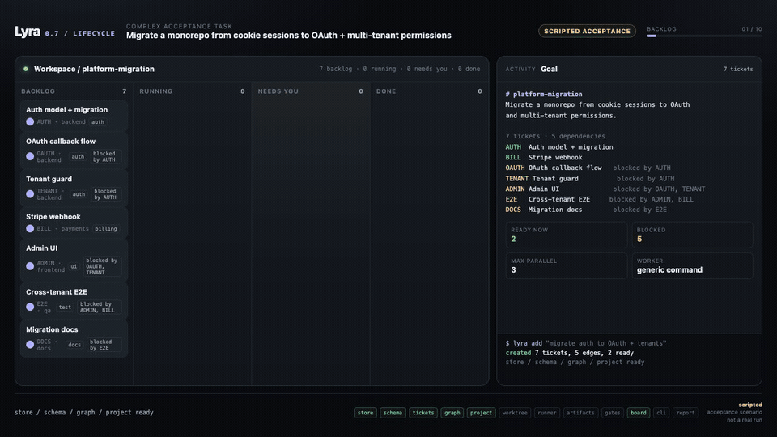

Lyra 不需要变成 Todos。它只需要把一件事做到最好： 用确定性任务图调度任意 worker，用两个 gate 让人放心，用一个 board 让状态可见。 其余全部是 adapter，或者暂时不做。
核心不认识 OMP、Claude Code、Codex、herdr、tmux、MCP。 它只认识一个命令、一个 worktree、几个文件和退出码。
不是“这个功能以后可能有用”，而是“现在没有它，核心任务还能不能完成”。
删掉它，用户仍能从 goal 走到 done，那它就不该在核心。
说不清它替用户解决什么问题，就不要因为“架构上好看”而保留。
不服务 DAG、runner、artifact、gate、board 中任何一环，就是外部适配器或死代码。
核心越小，产品重心越稳；工具、模型、终端、团队都不该把核心拖走。
Refactor 完成的标准不是“编译通过”，而是每一行代码都能在真实生命周期里被解释。
一个复杂到覆盖每个核心模块的任务，跑完整生命周期；上限、下限、真实问题都会暴露。
7 个 ticket、5 条依赖、2 个 gate、1 次阻塞、1 次失败重试、最终 merge。
store / schema / tickets / graph / project / worktree / runner / artifacts / gates / board / cli / report。产品路径覆盖，不是行覆盖率。
没有 live steering、secret plane、retry policy、merge conflict、remote machine、run history、gate latency、artifact provenance。
同一个任务，用 fake worker 脚本跑真实 0.7 binary；动画只是设计验收，不能替代运行时测试。

这是 scripted acceptance scenario，不是真实运行。 可交互版本：lyra-0.7-lifecycle-demo.html · 视频：lyra-0.7-lifecycle-demo.webm。
只有影响核心生命周期正确性的才进；控制面、团队、远程、工具适配全部出局。
send 能力位；0.7 不实现env 透传；不做 secret store / 授权events.jsonl；推送后置不是“这个功能酷不酷”，而是“删掉它，核心任务还能不能完成”。
没有它，用户还能不能从 goal 走到 done？如果不能，它是核心。
DAG、runner、artifact、gate、board。只有这五件事是产品闭环。
如果只影响 herdr、OMP、Claude 或某个模型，它应该是 adapter，不是核心。
一旦核心依赖某个工具的 readiness、session 或模型协议，产品重心就会被它拖走。
核心只暴露最小、最稳定的接口。适配器可以换，核心不动。
一个 shell command、一个 cwd、一组环境变量、一个退出码。核心不知道它是 OMP、Codex 还是 Claude。
PLAN.md、RESULT.md、DIFF.patch、logs/。人看的是产物，不是某个 agent 的私有 UI。
ticket / run JSON + events.jsonl。状态在 Lyra 里，不在某个 session 里。
本地 HTTP + SSE。board 是投影，不是 source of truth；CLI 和 UI 读同一份状态。
保留、重写、降级为 adapter、删除，只依据它是否服务核心闭环。
| Component | 它是什么 | 对产品的意义 | 删掉会怎样 | 判断 |
|---|---|---|---|---|
| store | 文件型 ticket store、claim、events、原子写入 | 产品的记忆。没有它，任务状态、claim、run 历史都不存在。 | 产品直接不存在。 | KEEP |
| schema | Ticket / Run / 状态 / 依赖的 schema 与校验 | 把“任务图”变成可验证的数据契约；是 board、runner、CLI 的共同语言。 | 每个组件各自猜字段，状态很快失控。 | KEEP + phase |
| tickets | 创建、更新、依赖图校验、批量创建 | 用户和 lead agent 写任务的入口；DAG 的编辑面。 | 只能手改 JSON，产品退化成脚本。 | KEEP |
| graph | ready / blocked / cycle 计算 | Lyra 和普通 todo list 的区别：任务之间有依赖，调度是确定的。 | 无法安全并行，只能串行或人工判断。 | KEEP |
| worktree | 每个 run 独立 branch / worktree / cleanup | 并行执行的安全边界。没有它，多 agent 会在同一目录里互相踩。 | 并行能力消失，只剩单 worker。 | KEEP |
| project | repo root、project id、store/run 路径 | 把“产品”落到“一个仓库”上；所有任务都有归属。 | 无法知道任务在哪个 repo 里跑。 | KEEP |
| names | AdjectiveNoun 可读 id | 人能在 board、CLI、对话里指同一个任务；小成本，高 UX 收益。 | 只剩 UUID，人不想读。 | KEEP |
| shell | 命令 quoting | 正确拼 worker command；很小，但错了会出安全事故。 | 引号/空格处理变成隐患。 | KEEP |
| acceptance | 校验 acceptance 指向的文档/路径是否存在 | 防止 ticket 引用不存在的 spec；小而有用的质量门。 | 错误提前到 worker 执行时才暴露。 | KEEP |
| agent.rs | 面向 lead/UI 的 status JSON | 让 board、CLI、外部 agent 读同一份状态；不是 agent runtime。 | 每个客户端自己拼状态。 | KEEP rename status_api |
| conductor | 调度、launch、settle、blocker、run state | 产品的心脏：把 DAG 变成实际执行。 | Lyra 只剩一个静态 ticket store。 | REWRITE |
| worker | worker channel、OMP extension、RESULT 解析 | 定义 worker 如何交付结果；但现在和 OMP 绑得太深。 | 没有结果协议，conductor 无法 settle。 | REWRITE |
| cli | init / setup / import / conduct / models / tickets / report … | 人的控制面；但命令太多会把产品重心拉回“工具集”。 | 没有入口；但保留 9 个核心命令即可。 | TRIM |
| config | pane_backend / harness / model / approval / merge | 产品旋钮；但现在的旋钮全是工具绑定。 | 没有配置；但只需 project / worker / parallel。 | REWRITE |
| upgrade | 下载 release、校验 checksum、替换二进制 | 分发能力；用户能持续拿到修复。 | 每次升级靠手动，产品不可维护。 | KEEP |
| import.rs | omp-kanban store 导入 | 没有核心产品意义。它只服务一次性的旧数据迁移，不是日常 loop。 | 旧数据不再自动导入；需要时用一次性外部脚本处理。 | DELETE 完全不需要 |
| harness.rs | 8 个内置 harness + 用户模板 + probe | 没有核心产品意义。它只服务“Lyra 要认识哪些 agent CLI”这个实现问题。 | 核心不再绑定 agent；worker command 仍然能跑任何 CLI。 | DELETE |
| pane/herdr.rs | herdr pane、agent start、readiness、send | 没有核心产品意义。它是终端适配器，不是任务编排。 | 核心不再被 herdr 的 readiness 语义影响；board/log 仍可看执行。 | DELETE |
| pane/ghostty.rs | Ghostty AppleScript 分屏/输入 | 没有核心产品意义。同上，是另一个终端绑定。 | 少一个必须维护的终端后端。 | DELETE |
| models.rs | model policy、provider caps、usage、roles.yml | 没有核心产品意义。模型选择是 worker/项目配置，不是 conductor 的职责。 | 用户仍可在 worker command 里传 --model；核心更简单。 |
DELETE |
| lyra-worker.mjs | OMP 专用 worker extension | 没有核心产品意义。它是 OMP 的提升项，不是 Lyra 的契约。 | 核心用文件契约；OMP 仍可写 RESULT.md 回报，只是少了结构化 progress/discover。 | DELETE |
| packages/omp | OMP lead-agent tools / /lyra command | 没有核心产品意义。它只是 OMP lead 的便利层，不是 Lyra 的产品能力。 | OMP lead 改用 lyra CLI / HTTP；核心不受影响。 | DELETE |
| tests / evals | 回归测试、端到端 eval | 保证核心契约不被改坏；不是用户功能，但必须保留。 | 核心会以更快的速度腐坏。 | KEEP |
删除它们，核心仍然工作：worker 写 RESULT.md，lead 调 lyra CLI / HTTP。
这是加载到 OMP worker 进程里的 extension。conductor 用
-e lyra-worker.mjs 注入它，并通过 LYRA_WORKER_CONFIG
指向本次 attempt 的配置文件。
lyra_progress：worker 汇报 investigating / planning / implementing / verifying 等阶段lyra_discover：worker 申请真实的 blocker / follow-up ticketlyra_finish：提交 done / blocked / failed / needs_input，并带 verification 和 evidencestate.json：pid、session、phase、heartbeatbefore_subagent_spawn 给 OMP 子 agent 注入 modelRoles
它没有配置时直接 no-op；它只依赖 OMP 的 extension API（pi.on、
pi.registerTool、pi.zod）。换成 Claude Code 或 Codex，这个文件完全用不上。
DELETE 0.7 不保留；核心用文件契约。
这是安装到 OMP lead session的 plugin。它让 lead agent 用六个 typed tools 驱动 Lyra CLI，而不是让模型拼 shell 参数。
lyra_status：读 project graph + run 状态lyra_tickets：list / show / update ticketlyra_tickets_create：批量创建带 DAG 的 ticketlyra_start：启动 run，立即返回 runIdlyra_wait：有界等待 run 进度lyra_control：stop / close 指定 run/lyra：给人用的 debug escape hatch，直接跑 CLI
它通过 LyraClient spawn lyra 子进程，自己不拥有状态，也不读写 ticket store。
它是“lead agent 怎么调用 Lyra”的适配层，不是 Lyra 的调度器。
DELETE 0.7 不保留；lead 用 CLI / HTTP。
lyra-worker.mjs 和 packages/omp 都不是核心，也不是 MVP。
没有它们，OMP 仍然能通过 RESULT.md / events.jsonl 回报结果；
lead 仍然能通过 lyra CLI / HTTP 调用 Lyra。
只有以后要做 OMP 实时 send / list / interrupt，才作为一个独立 provider 单独加回来，不进核心。
读完 antiAIvo 的 DSH 拆解，最值得 Lyra 借的不是源码，而是控制面心智模型。
subagent 负责派活，支持前台/后台；subagent_control 负责 send_message / list_agents / interrupt_agentctx.subagents 统一管血缘、深度、并发、取消和容量spawn / fork / ACP / Claude Code / Codex 都是可替换后端subagent → Lyra 的 ticket / run handlesubagent_control → lyra status / steer / stopctx.subagents → WorkerManager（claim、容量、血缘、取消）SubagentProvider → WorkerProvider traitspawn / fork → 新 worktree / 继承当前 worktreeRESULT.md（不需要 adapter）；
L1 通用 events.jsonl（任何 CLI 都能写）；
L2 实时 send / list / interrupt（需要 provider）。
MVP 只需要 L0/L1；OMP adapter 是 L2 的一个可选实现。
Adapter 不是问题，唯一 adapter 才是问题。
不是加一个 board，而是把“执行引擎”和“工具适配”彻底分开。
从 Todos 只借任务生命周期和两个 gate，不借 Chief、team、memory、connections。
Board 是投影：它读 ticket / run / artifact，不拥有它们。关掉 UI，任务和状态仍然在。
只做一个本地开发者每天能用的闭环。不是平台，不是团队产品。
先做“能看见”，再做“能确认”，最后才做“能对话”。
删 pane / harness / models；用 Command 在 worktree 跑 worker；日志落盘；RESULT 解析。核心不再认识任何 agent。
加 backlog / planning / awaiting_plan / building / awaiting_review / done；写 PLAN.md、DIFF.patch、RESULT.md；plan gate 可跳过。
lyra serve 起本地 HTTP + SSE；四列 board；task detail 读 artifacts 和 logs；先只读，再加 approve / reject / retry。
review approve 后 merge / done；旧 ticket 迁移；0.7.0 breaking release；0.6.x 只维护。
如果删掉一个 component，用户仍然能完成任务，而且它不是 DAG / runner / gate / board 的一部分，那它就不该在核心。
这是 Lyra 区别于“多开几个 agent 窗口”的根。确定性、可恢复、可并行。
这是从 Todos 借来的产品层：让状态可见、让人放心、让产物可读。
这些不是产品，是适配器。它们让核心变重，并把产品重心从“编排”拖向“支持工具”。